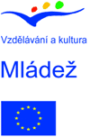

Kontakt:
Zuzana Ouhrabková
Koordinátorka projektu
(+420) 777 589 526
zdravevztahy@centrum.cz
Kalendář:
Březen
6.3. 2007
Prezentace projektu
9-11.3.2007
zážitková pedagogika live
20.3. 2007
Diagnostika skupiny
Duben
30.3.-1.4. 2007
Pracovní setkání
18-20.5.2007
Sprosté slovo týmbyldynk
Projekt podporují:


Partner projektu:

Tento projekt byl finančně podpořen Evropskou komisí. Tyto stránky odráží pouze postoje realizátorů projektu a Evropská komise ani Národní agentura nenese zodpovědnost za její obsah ani za jakýkoliv způsob užití informací v nich obsažených.
web & design by Zbych
http://zbysek.wosa.cz
Šikana? Módní slovo? Každodenní realita?
Podle opakovaných výzkumů se každé třetí dítě v České republice stálo někdy na pozici oběti šikany. Nejde bohužel o žádné iracionální výbuchy násilí, ale o dlouhodobý proces zničení zdravého ovzduší v mnoha běžných třídách.

V případě že se na riziko případné šikany přijde včas, dá se většinou změnit ledacos bez toho, aby se obětem příliš ublížilo a aby agresoři ztratili jakékoliv zábrany. Během běžného školního vyučování není moc čas na to, zabývat se tím, jak fungují vztahy ve třídě. Ostatně nejlépe se vztahy tuží třeba na lyžácích, výletech a školách v přírodě. Nebo ne?
Co tedy nabízíme?
Třídám ohroženým šikanou chceme umožnit jet na takový školní výlet, který nepovede k tomu, že se půl třídy opije na školním záchodku,kde nebude povinná diskotéka, a ranní rozcvička.

A kde namísto jasného rozložení sil budou mít všichni co největší šanci najít si takovou pozici ve třídě, která jim umožní fungovat beze strachu ze spolužáků.
Výlet který si všichni užijí a který pomůže budovat zdravé vztahy. K sobě, k druhým, ke světu.
Pro koho je projekt určen?
Pro třídy základních a středních škol a pro zájemce o práci s dětmi ve věku 15-25 let.
Co se bude dělat?
Na běžném školním výletě se nijak cíleně nepracuje se vztahy ve třídě. Ostatně pokud na jednu třídu jede 1-2 učitelé, nezbývá na takovou činnost síla, chuť a především často chybí zkušenosti a dovednosti, jak připravit takový program, který by děti neotrávil, neohrozil a navíc pomohl.
Díky finanční podpoře ČNA jsme schopní zajistit tým vyškolených dobrovolníků, kteří dokáži rozpoznat problém, jeho příčiny a souvislosti a vytvořit takový program, který zajistí ozdravění vztahů ve třídě při maximální psychické bezpečnosti žáků a studentů.